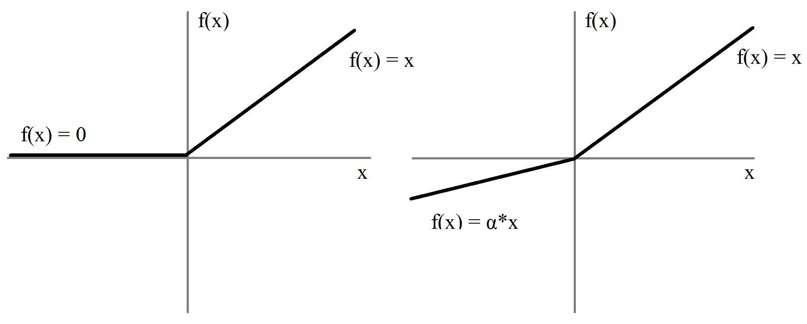
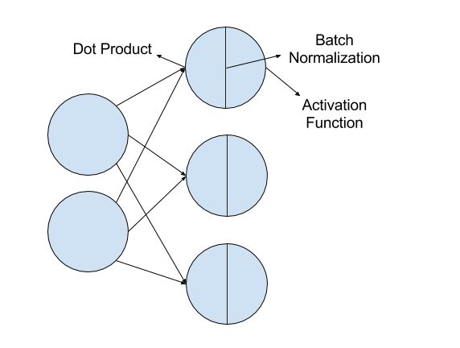

Two years in my Ph.D. I decided to start working on Deep Learning with ConvNets. This post summarizes the lessons learned after one month of digging into ConvNets.
Contents
The framework I've been using is Theano along with Lasagne which is a lightweight library to build and train neural networks in Theano. It has sufficient and well-written documentation (here and here), has many capabilities (e.g., layers, initializations) and at the same time it's low-level enough so as to give you the option to code almost everything.
The first thing you need to do is get a CUDA-capable GPU to run your programs. It might seem obvious but it's almost impossible to conduct experiments with many epochs, test different network structures, cross-validate, and report results from an ensemble of models on a CPU. It can be on your desktop, on Amazon Web Services, or in a cluster.
Then you need to make sure that you have set up everything. This includes the .theanorc file, the creation and activation of a virtualenv as explained in a great blog by Daniel Nouri (the instructions are here and more help can be found here and here). Besides Theano and Lasagne, other packages I'm using regularly include numpy, scipy, pandas, scikit-learn, PIL, matplotlib, OpenCV and nolearn. Then test that everything works fine by running the MNIST example as explained in Nouri's blog above.
How to start?
Since there are tons of papers coming out every year on deep learning, videos, lectures, online classes, and tutorials the question that arises is "from where do you start?" Before anything else, there are three wonderful sources I would suggest:
The electronic book of Michael Nielsen on Neural networks and deep learning for the reason that it starts from basic Neural Networks, provides detailed explanations with figures, examples and code and builds gradually on top of that in order to introduce Deep Learning in the final chapter.
The Stanford Convolutional Neural Networks for Visual Recognition class by Prof. Fei-Fei Li, Andrej Karpathy and Justin Johnson. The notes are well-written, it's very up to date with the current state of the art and the videos of the lectures which were initially taken down can be found here.
Daniel Nouri's tutorial on employing ConvNets to detect facial keypoints using regression as part of a Kaggle challenge.
I would then suggest to follow the social media profiles of researchers that you look up to or you like their work. For example by following Yann LeCun on Facebook I came across this very interesting discussion on ConvNets, his videos and slides from classes and seminars from the Deep Learning course he offered in Collège de France. Andrew Ng recently posted that he will deliver online for free his new Machine Learning book to some early subscribers. Following the website of companies that conduct research on AI or Machine Learning such as OpenAI, Google DeepMind, Facebook AI Research etc. can also be very beneficial. Since deep learning is a field that expands at a great pace, the only way to keep up is read, and then read some more.
Structure and Layers
For image-related tasks, ConvNets take a dataset of images along with their respective labels as an input and train a model that given a new image it can predict its label.
Figure 1: A ConvNet example with a structure of Input - (Conv - Pool)×2 - FC - FC (Output).
A typical ConvNet looks like Figure 1 and comprises:
An input layer that feeds the images to the network and its only parameter is the "shape" which for an RGB image of size N×N is defined as shape=(None, 3, N,N)
Convolutional layers are where all the magic happens. The neurons are arranged in three dimensions (width, height, depth) and the key characteristics are the local receptive fields and the parameter sharing.
Local receptive fields: Since images are high dimensional, it's computationally expensive and impractical to make all the connections between two subsequent layers of neurons. Instead, each neuron of the convolutional layer is connected only to a specific region of the image (if we're talking about the first convolutional layer), and this region is the local receptive field. Its size (i.e., filter size) is a hyperparameter that usually has a value of 3 or 5. During the forward pass, the local receptive field is slid across the input (this is where convolutions take place) and each local receptive field on the input volume corresponds to a different hidden neuron. The step with which the local receptive field is slid across the image is called stride (also a hyperparameter). Note that, the local receptive field slides through the width and the height but extends through the full depth of the input volume.
Parameter sharing: For an RGB image (i.e., 3 color channels and thus, depth equal to 3) the first convolutional layer with a filter size equal to 5 we will have 5×5×3 = 75 weights plus the bias. These weights and the bias will be the same for each depth dimension and this is called parameter sharing and reduces a lot the number of parameters that have to be learned. It has to be mentioned that the mapping from one layer to the other (for example from the input to the first convolutional or between two convolutional layers) can take place many times and each one of these times is a feature map. Each feature map detects a different kind of feature. For example, if we assume that the first convolutional layer learns basic generic features (which can be edges, corners, etc.) we can have 16 feature maps from the input image to the first layer. Thus, the parameters between feature maps are different, but in the same feature map, they are the same. As mentioned in the Stanford class notes, this property of parameter sharing enables the computation of the convolutional layer during the forward pass to be computed as a convolution of the neuron's weights with the input volume.
Pooling layers are layers that are usually placed after the convolutional layers and by reducing the spatial size of the representation (i.e., the width and the height) they reduce the number of parameters that have to be learned. A pooling layer has two parameters, namely the filter size and the stride. For every depth dimension, a pooling layer with a filter size of 2×2 and a stride of 2, discards 75% of the activations as it outputs one number for every four that takes as an input and thus for an N×N×D input it outputs (N/2)×(N/2)×D (and that's why the image size is convenient if it can be divided by 2 many times without any remainder). Pooling layers can output the maximum (max-pooling), the mean, the L2 norm etc.
Fully connected layers are layers like the ones that are used in regular neural networks and have full connections with the previous layers. They are usually placed at the end of the ConvNet and the number of hidden units is another hyperparameter.
The output layer is also a fully connected layer which during training computes an output prediction and backpropagates the error from the loss function to the neural network. Its number of units depends on the number of the classes of the problem (e.g., 2 for a binary problem, 10 for MNIST, 1000 for ImageNet competitions) and for classification tasks it's usually followed by a softmax non-linearity function.
Activation Functions
After the dot product of the input and weights is computed and the bias is added, the result is passed through a non-linearity. Regular neural networks are making use of the sigmoid or tanh activation functions. In ConvNets the most frequently used non-linearity is the Rectified Linear Unit (ReLU) function which is as simple as the max(0,x) where x is the input to the neuron. Variants of the ReLU have been proposed recently [1] such as the Parametric Rectified Linear Unit (PReLU also called leaky-ReLU) which allows a small non-zero gradient (controlled by a parameter α) when the unit is not active (instead of zero) as depicted in Figure 2. The activation function (for example the ReLU) applies elementwise the function to every neuron and thus, leaves the volume size unchanged.

Figure 2: ReLU and leaky-ReLU
Overfitting
Overfitting in ConvNets is a crucial piece of information and at the same time a huge struggle to control it. Something that I learned the hard way is that overfitting at the beginning is required, because it means that the selected network structure can at least represent adequately the training data. If there's no overfitting initially at the training set then most likely the network is not sufficient (deep enough, complex enough etc.) After you have overfitted the training set there are a couple of techniques to control this phenomenon.
Data augmentation
When your dataset does not have a lot of data or if you're overfitting your training set then a common technique is dataset augmentation which artificially increases the number of training samples. In each mini-batch iteration, a subset is randomly selected each time and augmentation is usually performed only in this subset. The power of data augmentation is that it's performed while iterating over the batch samples and thus, in theory, it allows us to produce an infinite number of training samples. If it was performed beforehand then the training set would be of fixed size and most likely it would take a lot of memory space.
Data augmentation can be implemented by:
transformations such as translations, rotations, scaling, cropping
During data augmentation you need to be careful with the size of the output image since since depending on the transformation and the selected options the output size may vary. Krizhevsky et al. [2] proposed to augment the training set by performing PCA on the set of RGB pixel values throughout the training set:
Compute the 3×3 covariance matrix Xc on the whole training set.
Compute the eigenvalues (l) and eigenvectors (V) of Xc
For each image, compute a random variable α sampled from a Gaussian distribution with zero mean and 0.1 standard deviation α~N(0,0.1)
Compute the noise to be added as the dot product between V and [α×l].
Add the computed noise to each RGB image pixel.
As the authors mention, each α is drawn only once for all the pixels of a particular training image until that image is used for training again, at which point it is re-drawn. This code provides an object-oriented implementation which can be re-written as follows:
Where the eigenvalues and eigenvectors are computed before starting the training as follows:
Xtr = np.rollaxis(X, 1) # X is the training setXtr = Xtr.reshape((Xtr.shape[0], -1))l, V = np.linalg.eig(np.cov(Xtr))
Batch Normalization
Introduced by Ioffe and Szegedy in 2015 [3], batch normalization is a technique that in each layer performs normalization across the batch and makes the model more generalizable by reducing the covariate shift and whitening the activations. It also solves the problem of bad weight initialization and increases the learning speed. It is inserted immediately after fully connected layers (or convolutional layers), and before non-linearities as depicted in Figure 3. An interesting Quora discussion on batch normalization can be found here and recently, Arpit et al. [4] proposed an alternative to BN for removing the internal covariate shift problem by Normalization Propagation (NormProp).

Figure 3: Batch Normalization and where it takes place
Fine-tuning
Training a ConvNet from scratch is definitely an exciting and challenging task that is worth trying because it gives you the opportunity to understand in greater depth how things work in each layer and in the ConvNet as a whole. However, if you don't have a lot of data (which is usually the case since labeled data like ImageNet are rare) if you train a ConvNet from scratch overfitting will be unavoidable regardless of what regularization techniques you're using or to what extent you're augmenting the training data. Similar to Caffe, Lasagne-based pre-trained models can be found in recipes under the modelzoo folder. The way I see it, using a pre-trained model is equivalent to a good weight initialization across all layers of the network. I will give an example based on VGG-16 [5] along with a few lessons learned from fine-tuning it.
VGG-16 which was designed for ILSVRC-2014 comprises 5 groups of layers, where each group consists of 2 or 3 convolutional layers with a ReLU activation function followed by a max-polling layer. Two dense layers are then stacked followed by a non-linearity layer that computes the softmax. Since VGG was designed to tackle a problem with 1000 possible output classes its structure is very deep and thus, the parameters that need to be learned are more than 100 million. For a problem with a few output classes such a deep network (even if it's used only for fine-tuning) can be problematic due to the fact that deepness affects significantly the training time.
By playing with VGG-16 (it can be extended to other models depending on the structure of course) I learned the following:
If you're planning to use it "as is" which means along with the FC layers then the size of the input image cannot be different since from the last convolutional layer to the first fully connected, its size at that time (after pooling has been applied across the network) plays some role. As Andrej Karpathy mentions you can tackle this by converting fully connected to convolutional layers or you can just drop the fully connected layers and replace them with a global pooling layer (just an example) as He et al. suggest in [1].
Since ConvNets learn hierarchical representations starting from low-level features (such as edges) in early layers to high-level output-dependant features (such as dog breeds) in latter, depending on the task you might want to drop some latter layers and replace them with other layers the weights of which will have to be learned. In such a scenario, the layers that are kept require a smaller learning rate than the new ones that are randomly initialized and their weights need to be learned from scratch. An approach that fine-tunes VGG while adding on top new layers and uses 2 different learning rates is proposed by Kruthiventi et al. [6]. Different learning rates across the network can easily be used in lasagne by passing the update parameters in each layers separately as suggested in this topic.
Dropout
Dropout is a powerful regularization technique introduced by Srivastava et al. [7] to address the problem of overfitting. Instead of adding regularization terms to the cost function (as L1 and L2 regularization techniques do), dropout modifies during training the network itself. What dropout does during training, is randomly dropping for each epoch, a percentage of units (along with the corresponding connections) from some selected layers of the ConvNet and passing the training set through what's left.
For example, if dropout is applied with a probability of 50% after a fully-connected layer with 1024 units, then in each epoch 512 units of the layer are randomly dropped at training time. Thus, the neurons in the respective layers try to learn representations without relying too much on other neurons on the same layer (co-adaptation) and try to learn more robust representations. At test time, all the neurons are going to be active which means that (if the probability of dropout was N%) 100/N as many neurons will be active compared to the training stage. To alleviate this, weights that come out of the respective layer are divided by 100/N.
To understand dropout better, I would suggest reading the original paper along with the aforementioned electronic book chaptrer of Michael Nielsen. Additionally, in the Stanford ConvNet class, the inverted dropout technique is discussed, which performs the scaling described above, during training, leaving the forward pass at test time untouched. Goodfellow et al. [8] proposed maxout, a natural companion to dropout. The maxout model is simply a feed-forward achitecture, such as a multilayer perceptron or deep convolutional neural network, that uses a new type of activation function: the maxout unit. It facilitates the optimization by dropout and improves the accuracy of dropout’s fast approximate model averaging technique.
Defining a ConvNet in Lasagne
Approach 1
When I started playing with Deep Learning, I followed the approach of Daniel Nouri's tutorial to define a network in Lasagne using nolearn. For example:
Defining a network like that with the help of nolearn is nice because:
It's clearly written, easy to understand and adding parameters that correspond to each layer (according to the way layers are defined) is simple.
It enables you to use scikit-learn's pipeline and cross-validation features (for example the RandomizedSearchCV function.
Approach 2
However, at some point I decided that I wanted to use batch normalization in some layers which comes in the form of the batch_norm function in lasagne and requires not a layer class type (Conv2DLayer) but an instance of it. Thus, I changed the previous network definition to this one:
# Defining the layers firstl = layers.InputLayer(shape=..., name="input")l = batch_norm(layers.Conv2DLayer(l,...))l = layers.DenseLayer(l, num_units=30,...)
net = NeuralNet( layers=l, max_epochs=1000,)
Approach 3
And then I decided that the way the previous networks are defined - by using the NeurnalNet class from nolearn - is restricting (at least for me) because what if I wanted to have a custom loss function? Inspired by the Deep Residual Learning on CIFAR-10 code I dumped nolearn and started coding everything manually using theano functions and lasagne tools. The NeuralNetwork class is replaced by the following:
# Defining the layers firstl = layers.InputLayer(shape=..., name="input")l = batch_norm(layers.Conv2DLayer(l,...))l = layers.DenseLayer(l, num_units=30,...)
# Feedforward and compute the loss
input_var = T.tensor4('inputs')target_var = T.ivector('targets')prediction = lasagne.layers.get_output(l)loss = lasagne.objectives.categorical_crossentropy(prediction, target_var)loss = loss.mean()
# Get the parameters (weights, biases etc.) and update them
params = lasagne.layers.get_all_params(l, trainable=True)updates = lasagne.updates.momentum(loss, params, learning_rate=sh_lr, momentum=sh_mom)
# Theano functions for the training loss and computation of test loss
train_fn = theano.function([input_var, target_var], loss, updates=updates) test_prediction = lasagne.layers.get_output(network, deterministic=True) test_loss = lasagne.objectives.categorical_crossentropy(test_prediction, target_var) test_loss = test_loss.mean()
This is more complicated than the previous two, more lines of code and less appealing but the upside is that we're capable of changing everything to our needs which at the end of the day is what makes Theano and Lasagne exciting.
Conclusion
The way I see it, Deep Learning using ConvNets is just another Machine Learning tool that's essential to know and have it in your knowledge toolbox as it can help you address challenging tasks with great success that other ML methods cannot. In the recent years, there has been a great amount of publications suggesting methods that overcome existing problems (overfitting, number of parameters, initialization, internal covariate shift) while achieving at the same time classification results that have closed the gap to human-level performance if something as abstract as that can be properly defined. Whether we're in a Deep Renaissance or in a Deep Depression period remains to be seen. In any case, experimenting with ConvNets is rewarding because there's always another idea to try, another nice publication to read, or another meaningful application that's using it. In the next few years Deep Learning might be everywhere around us, from medical imaging to reducing energy consumption, so if you like it, just keep digging.
References
[1] K. He, X. Zhang, S. Ren, J. Sun, "Delving deep into rectifiers: Surpassing human-level performance on imagenet classification" in Proc. IEEE International Conference on Computer Vision, 2015, pp. 1026–1034.
[2] A. Krizhevsky, I. Sutskever, G. E. Hinton, "Imagenet classification with deep convolutional neural networks", in Advances in Neural Information Processing Systems, 2012, pp. 1097–1105.
[3] S. Ioffe, C. Szegedy, "Batch normalization: Accelerating deep network training by reducing internal covariate shift", arXiv preprint arXiv:1502.03167.
[4] Arpit, D., Zhou, Y., Kota, B.U. and Govindaraju, V., "Normalization Propagation: A Parametric Technique for Removing Internal Covariate Shift in Deep Networks." arXiv preprint arXiv:1603.01431, 2016.
[5] K. Simonyan, A. Zisserman, "Very Deep Convolutional Networks for Large-Scale Image Recognition." arXiv preprint arXiv:1409.1556 (2014).
[6] S. S. Kruthiventi, K. Ayush, R. V. Babu, Deepfix: A fully convolutional neural network for predicting human eye fixations. arXiv preprint arXiv:1510.02927, 2015
[7] N. Srivastava, G. E. Hinton, A. Krizhevsky, I. Sutskever, R. Salakhutdinov, "Dropout: a simple way to prevent neural networks from overfitting" Journal of Machine Learning Research, 15(1), 2014 1929-1958.
[8] I. J. Goodfellow, D. Warde-Farley, M. Mirza, A. C. Courville, Y. Bengio, "Maxout networks". ICML (3), 28, 2013,, 1319-1327.